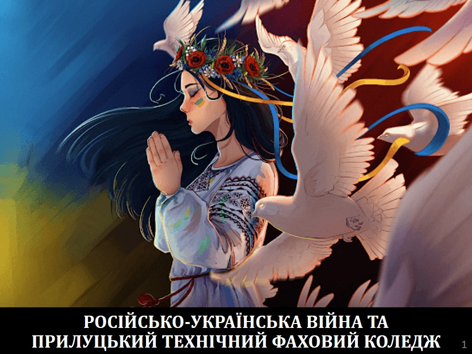
Слайд 1
Ще два роки тому, ми з вами не знали дуже багатьох слів, пов’язаних з війною, тепер же майже кожну родину так чи інакше опалило полум’я військових дій. Ми не особливо звертали увагу на слова «слава Україні – Героям слава», а тепер ці слова набули нового змісту.
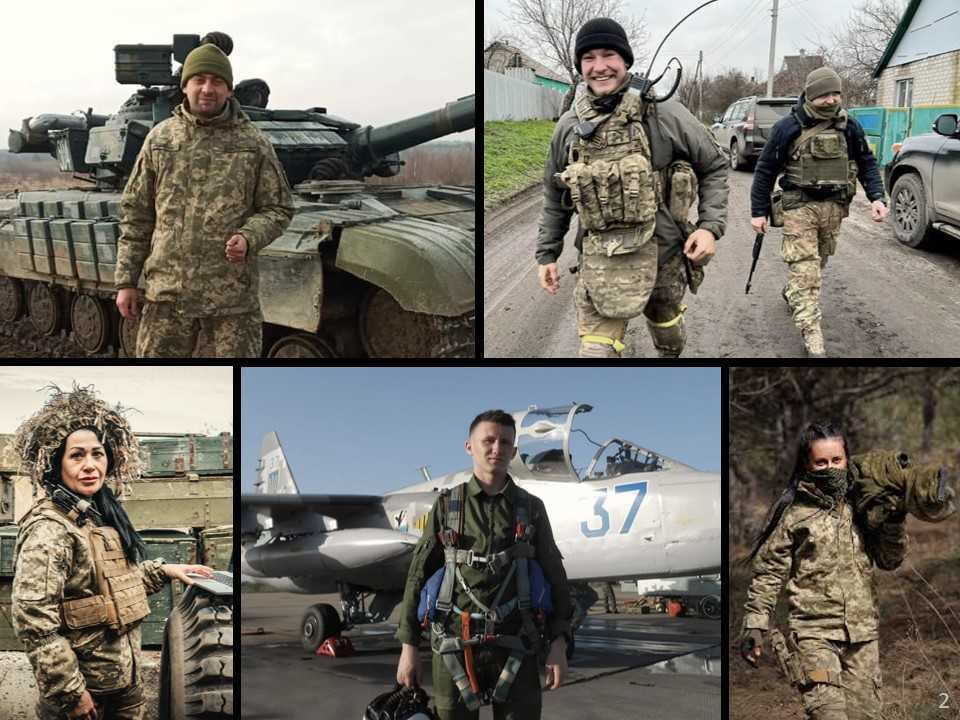
Слайд 2
Наразі вже точно зрозуміло, кому ці слова адресовані, і ні в кого немає сумнівів, що ці герої – хлопці та дівчата, чоловіки та жінки, що зі зброєю в руках захищають кордон України, лікарі, які повертають поранених в з того світу, волонтери, на плечах яких тримається наша армія.
Слова «Слава Україні – Героям слава» перестали бути просто вітанням. Це вже віддання шани найкращим, котрі у найважливіший момент нашої держави не злякалися і пожертвували собою заради своєї Батьківщини, а також є свідченням справжнього патріотичного подвигу.
Коли перед очима кадри з новин, фото поранених та загиблих героїв, дивлячись їм у вічі, ми розуміємо, що вислів «душу й тіло ми положим за нашу свободу» став для сучасної історії української нації не просто словами з гімну, це стало станом душі.
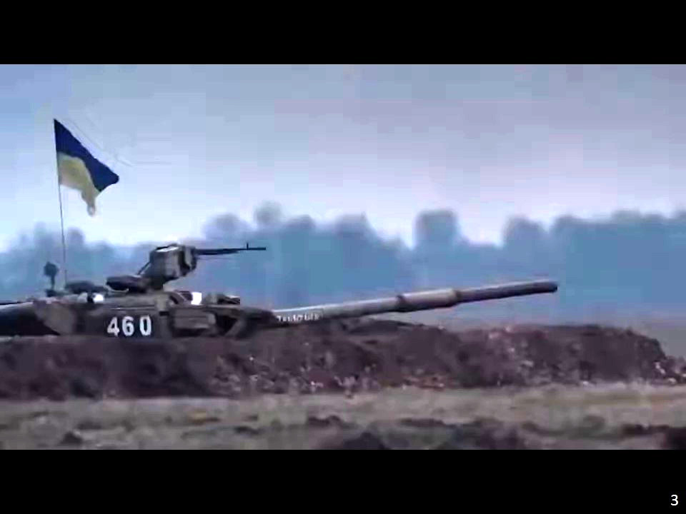
Слайд 3
Звучить гімн
Виховна година присвячується нашим Героям , незламній нації, нашим прилуцьким захисникам , тим , хто зараз на дорогах війни і тим, хто назавжди залишився у наших серцях і пам’яті!
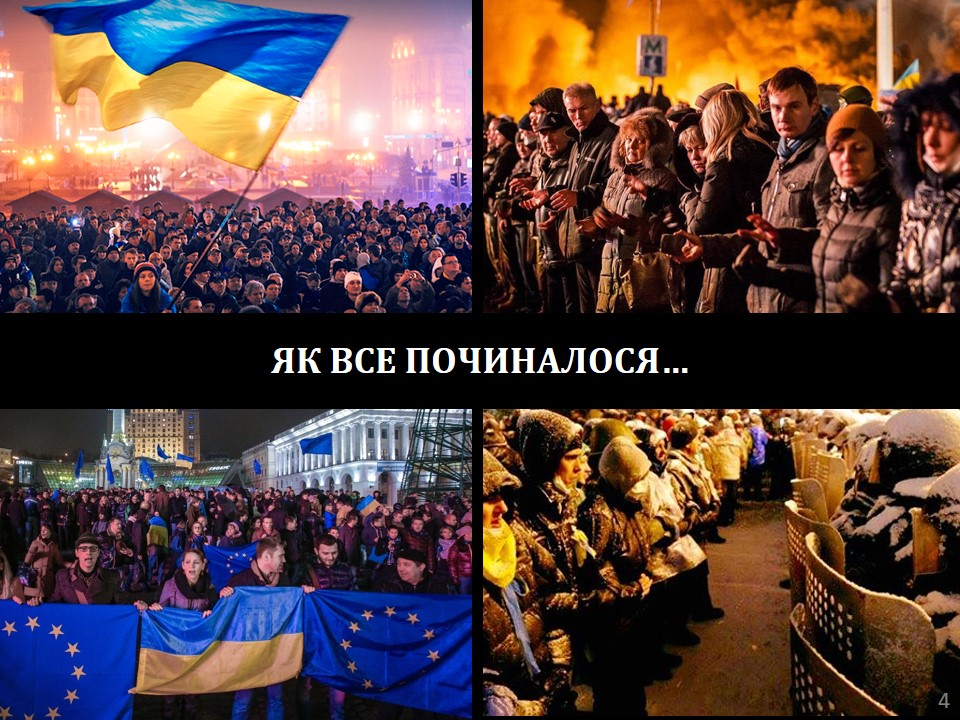
Слайд 4
ЯК ВСЕ ПОЧИНАЛОСЯ…
Історична довідка
Спусковим гачком для початку збройної агресії Російської Федерації проти України стала Революція гідності (21 листопада 2013 року – 20 лютого 2014 року), коли українці повстали проти узурпації влади президента Віктора Януковича та зміни зовнішньополітичного курсу з євроінтеграційного на проросійський.
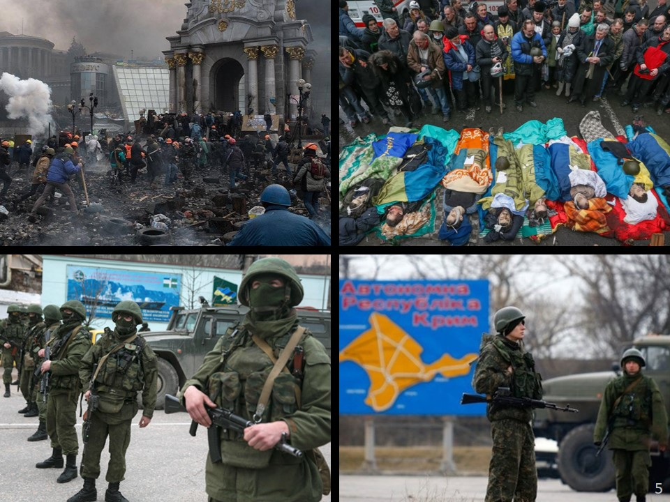
Слайд 5
20 лютого 2014-го року розпочалася активна збройна агресія Росії проти України з переміщенням російських військових підрозділів у Криму та в районі Керченської протоки. Ця дата зафіксована на відомчій медалі Міністерства оборони Росії «За повернення Криму». 20 лютого 2014 року визначено днем початку російської агресії.
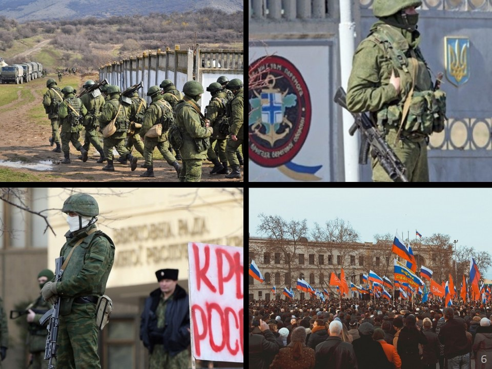
Слайд 6
У лютому – березні конфлікт розвивався в Криму. Туди зайшли російські військові без розпізнавальних знаків. На півострові встановили режим воєнної окупації.
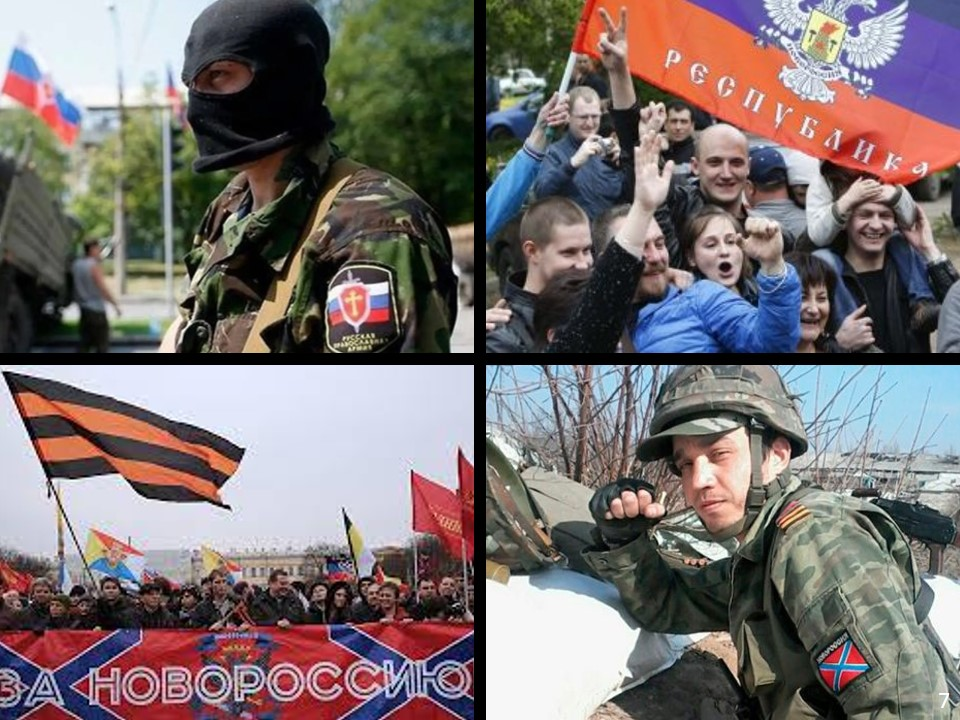
Слайд 7
Також до початку квітня 2014-го Росія почала реалізовувати план «Новоросія» та дестабілізувати ситуацію на сході країни – підбурювати антиукраїнські протести, захоплювати будівлі обласних державних адміністрацій і правоохоронних органів.
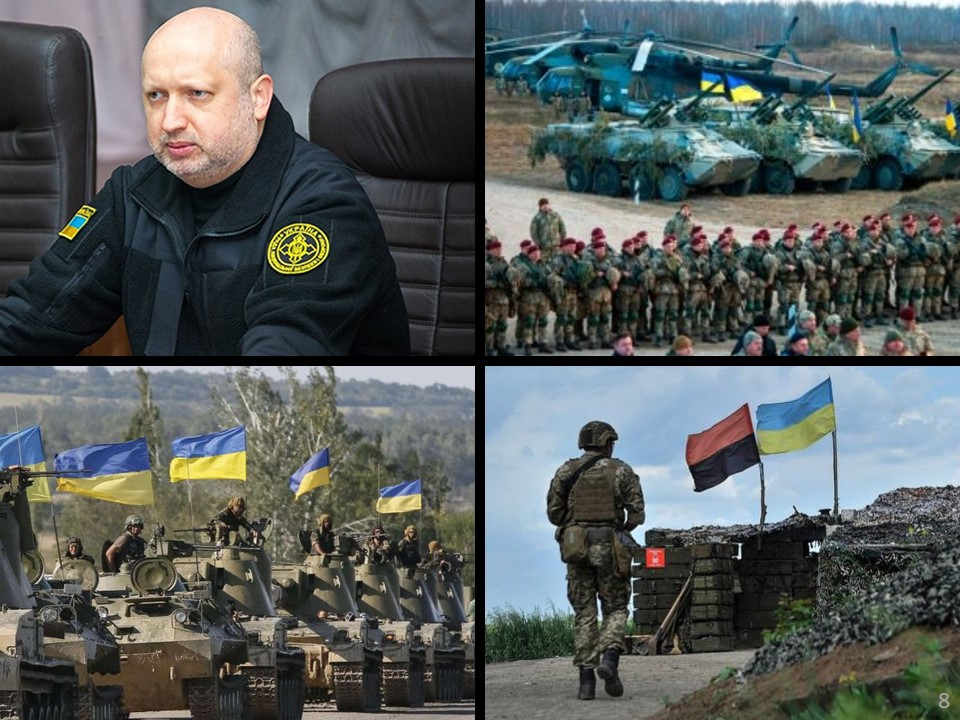
Слайд 8
14 квітня виконувач обов’язків Президента України Олександр Турчинов оголосив про початок антитерористичної операції із залученням Збройних сил України.
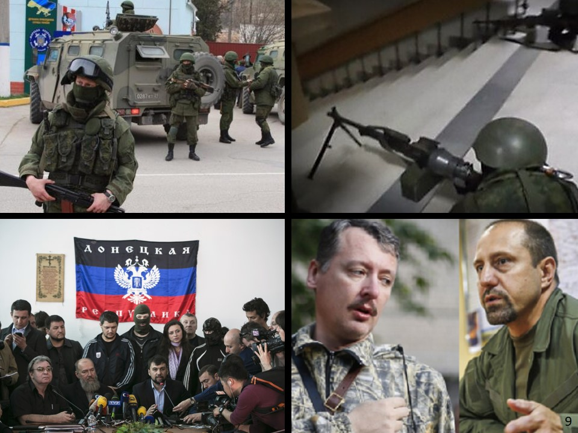
Слайд 9
Перший період збройного конфлікту на сході України – початок квітня до 19 вересня 2014 року. Контрольовані спецслужбами Російської Федерації озброєні бандитські формування захоплювали адмінбудівлі та проголошували створення «народних республік». Самозвані лідери контрольованих РФ угруповань «ДНР» і «ЛНР» провели фіктивні референдуми про відокремлення від України.
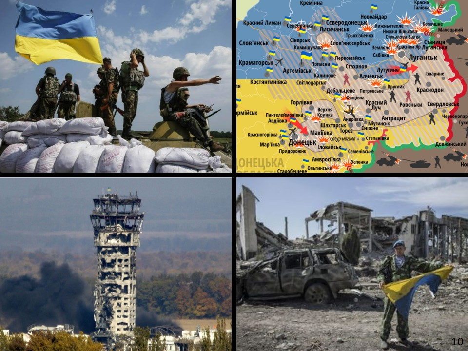
Слайд 10
В червні сили АТО розпочали активні дії зі звільнення території Донецької та Луганської областей від російських терористичних осередків. За червень – серпень наші військові звільнили від російської окупації низку українських великих і малих міст, сіл та селищ у Луганській та Донецькій областях, відновили контроль над ділянкою у понад 250 кілометрів українсько-російського кордону.
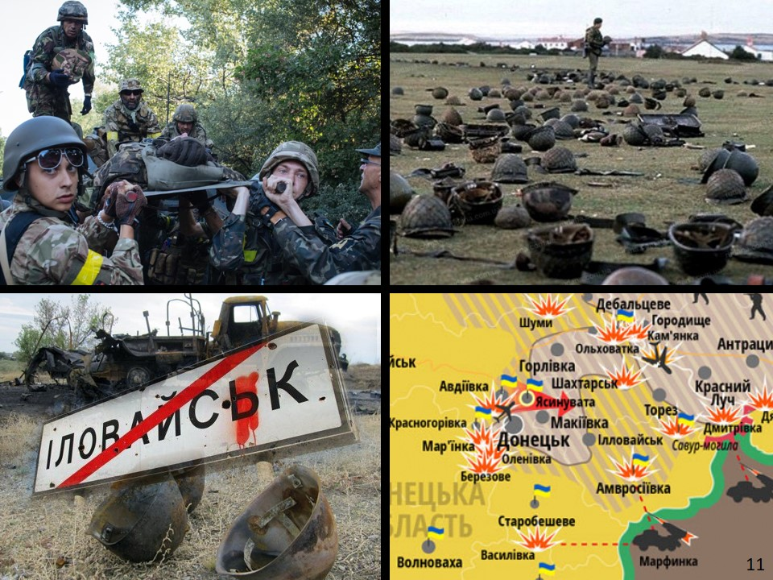
Слайд 11
Наприкінці серпня 2014-го року поблизу Іловайська українські військовослужбовці вперше зіткнулися зі значними регулярними силами російської армії.
Щоб уникнути повномасштабного вторгнення, Україна погодилася на підписання 5 вересня Мінської тристоронньої угоди (так званий мінський протокол або перша мінська угода).

Слайд 12
19 вересня учасники Тристоронньої контактної групи від України, Російської Федерації, Організації з безпеки та співробітництва в Європі та представники окремих районів Донецької й Луганської областей підписали Меморандум.
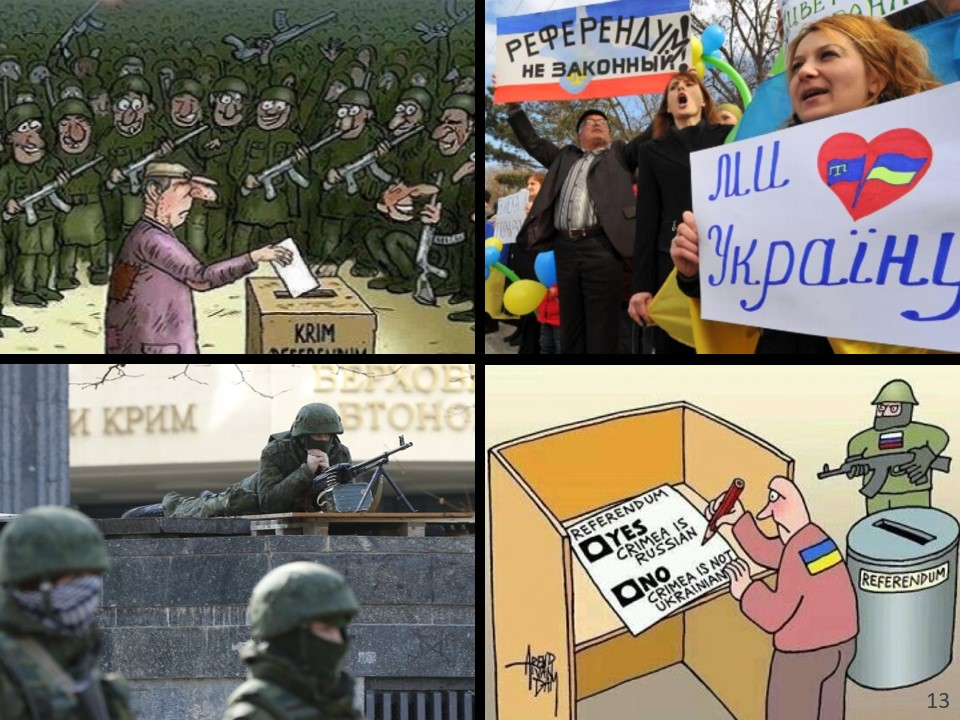
Слайд 13 (Війна Росії проти України почалася з Криму)
16 березня 2014 року відбувся псевдореферендум про статус Криму. Відтоді Автономна Республіка Крим і місто Севастополь окуповані збройними силами Росії.
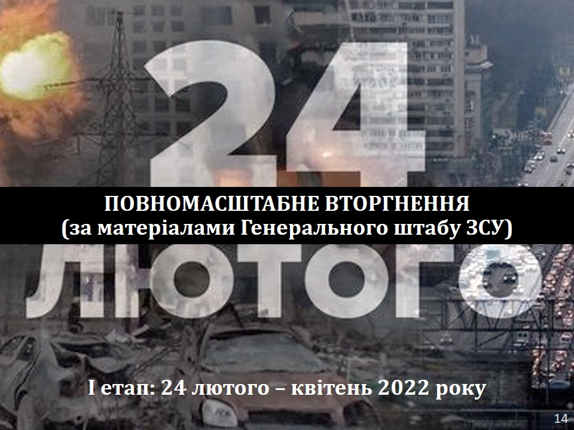
Слайд 14
ПОВНОМАСШТАБНЕ ВТОРГНЕННЯ.
Етапи (за матеріалами Генерального штабу ЗСУ)
І етап: 24 лютого – квітень 2022 року
24 лютого 2022 року близько 4-ї години президент РФ Володимир Путін оголосив про початок «спеціальної воєнної операції», метою якої він назвав «демілітаризацію і денацифікацію України».
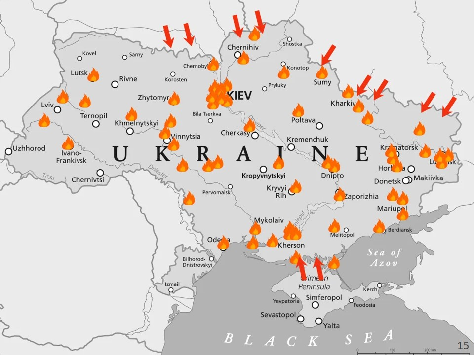
Слайд 15
За кілька хвилин російські ракети атакували українські аеродроми та військові об’єкти по всій Україні, почалося відкрите збройне вторгнення росіян із території Білорусії та тимчасово окупованого Криму. Російсько-українська війна, розпочата РФ у 2014-му, перейшла в нову гостру фазу.
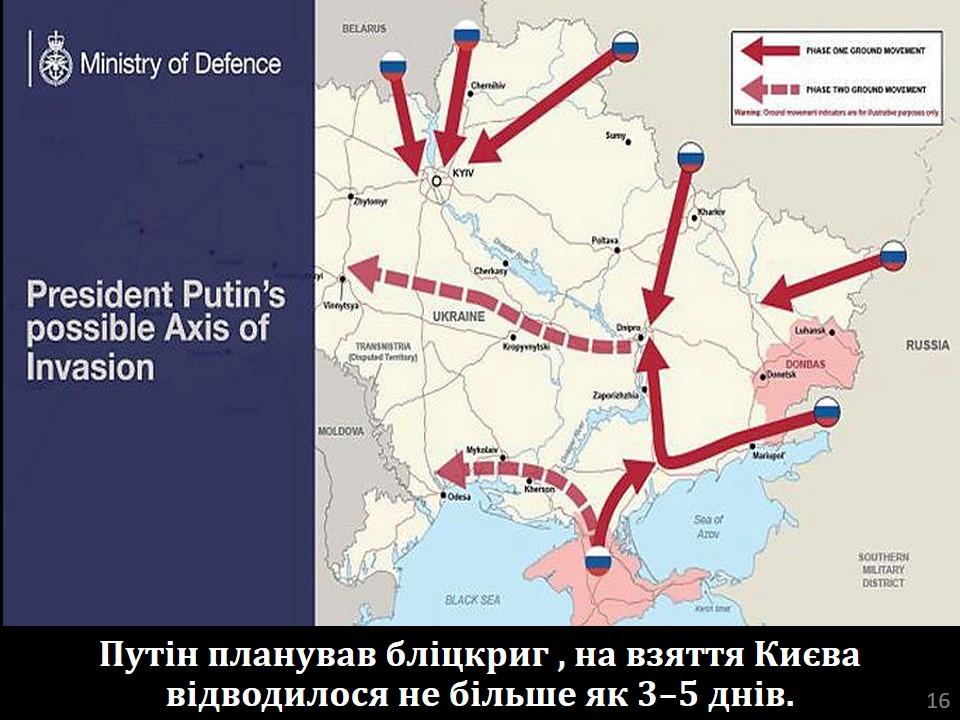
Слайд 16
Повномасштабне вторгнення військ противника до України велося багатьма напрямками, внаслідок чого сформувалося кілька операційних зон: Північно-Західна, Східна та Південно-Західна.
Путін планував бліцкриг , на взяття Києва відводилося не більше як 3–5 днів.
Паралельно було завдано удару з півночі по Чернігову, Сумах та Харкову, а з півдня – на Одесу, Миколаїв, Херсон і Маріуполь.
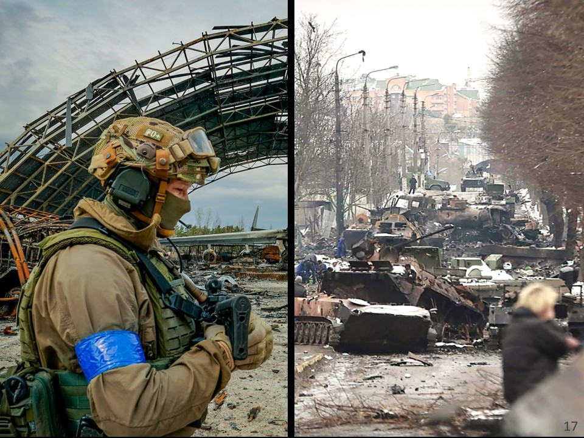
Слайд 17
Уже сьогодні серед знакових тактичних епізодів повномасштабної війни можна назвати битву за Київ
(24 лютого – 1 квітня 2022 року). Наступ на столицю відбувся з трьох напрямків. Відбиваючи наступ противника, підрозділи Сил оборони України змогли зупинити його просування на всіх напрямках.
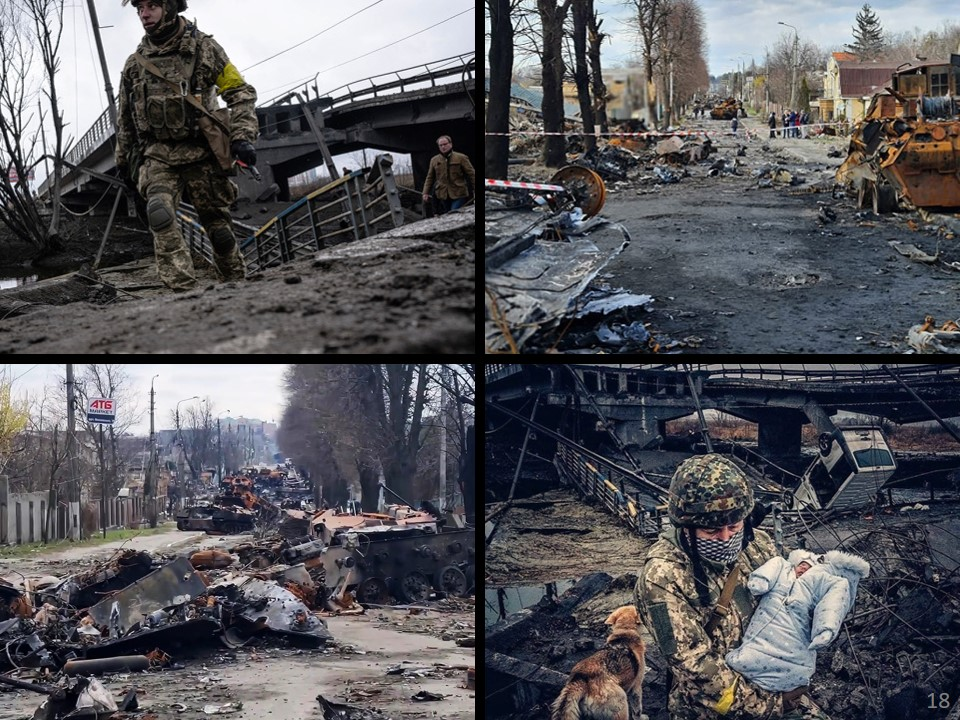
Слайд 18
Епізодами битви за Київ стали:
– бої за Ірпінь, Ворзель, Бучу, Гостомель.
Застосування реактивної, ствольної артилерії, танків, стрілецького озброєння призвело до великих жертв серед цивільних.
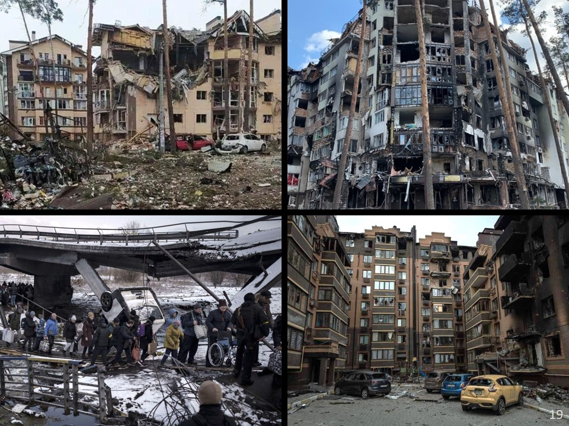
Слайд 19
Одночасно рашисти масово проводили серед місцевих так звані зачистки. Тіла численних жертв ховали у братських могилах. З 19 березня підрозділи Сил оборони України перейшли до контрнаступу.
Ворог почав відступати.
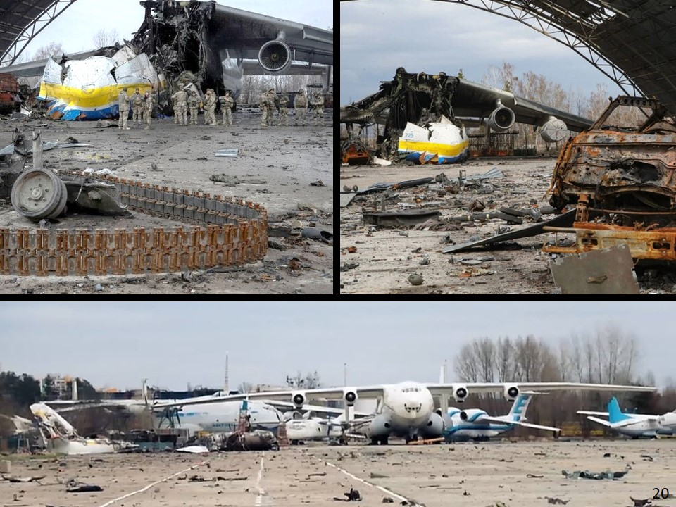
Слайд 20
– бої за аеропорт «Антонов» у Гостомелі.
На цьому аеродромі перебував на ремонті флагман і символ української авіації – легендарний Ан-225 «Мрія». Масованими обстрілами російські окупанти знищили «Мрію».
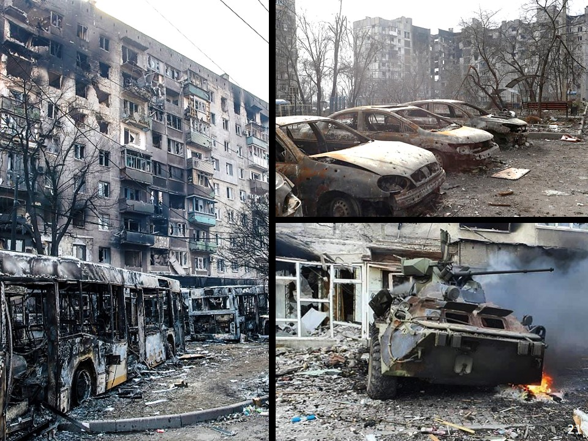
Слайд 21
Знаковий тактичний епізод першого етапу повномасштабного вторгнення – бої за Маріуполь.
28 лютого 2022 року противник розпочав облогу міста. Сили оборони України вимушені були відступити до міста й вести кругову оборону попри суттєву чисельну та вогневу перевагу ворога.

Слайд 22
Від 21 квітня єдиним опорним пунктом Сил оборони України в Маріуполі лишився металургійний комбінат «Азовсталь». Тримаючи там оборону до 20 травня, наші герої відтягували найбоєздатніші ворожі підрозділи від інших напрямків.

Слайд 23
II етап: травень – серпень 2022 року
Після провалу первинного задуму щодо швидкого прориву та захоплення України, противник перегрупував війська та продовжив наступ на кількох напрямках. Сили оборони України перейшли до стабілізаційних заходів, а ведення бойових дій звузилося до двох операційних зон – Східної та Південно-Західної.

Слайд 24
Серед знакових тактичних епізодів цього етапу
– бої за Сєвєродонецьк
– Лисичанськ.
8 травня, намагаючись захопити Луганську область, ворог загарбав Попасну, 12 травня – Рубіжне.
На цьому етапі варто згадати й бойові дії на Лиманському, Авдіївському та Новопавлівському напрямках.
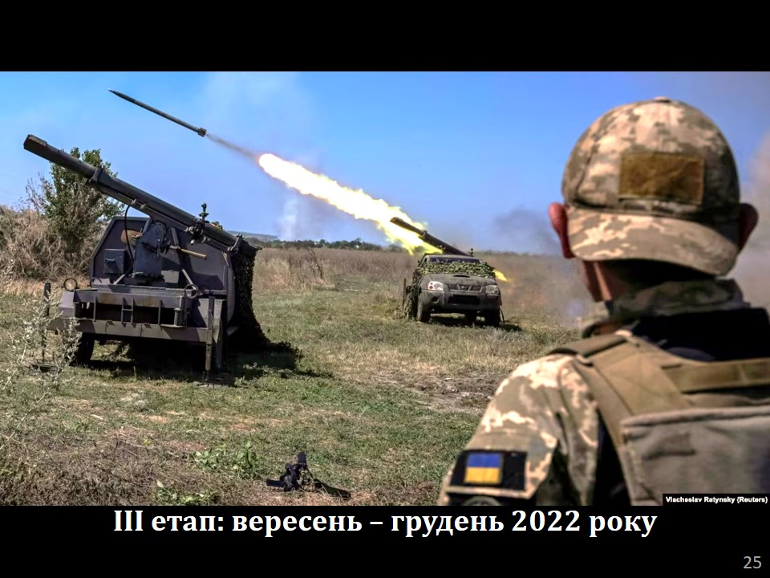
Слайд 25
III етап: вересень – грудень 2022 року
Ворог втратив ініціативу та мусив вживати радикальних заходів для збереження свого положення на окупованих територіях.
На цьому етапі знаковими тактичними епізодами були наступальні операції Сил оборони України:
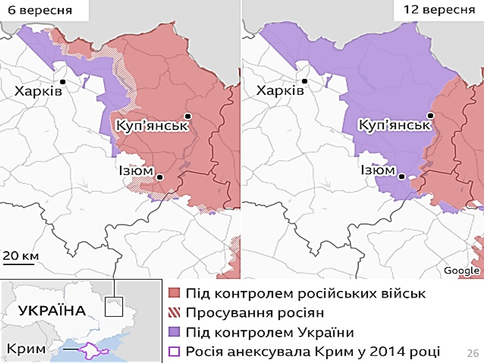
Слайд 26
– Харківська наступальна операція.
5 вересня розпочали наступальну операцію в Харківській області. Заскочені зненацька ворожі підрозділи були розгромлені та дезорієнтовані.
Українці звільнили до 500 населених пунктів, серед них – міста Ізюм, Балаклія, Куп’янськ.
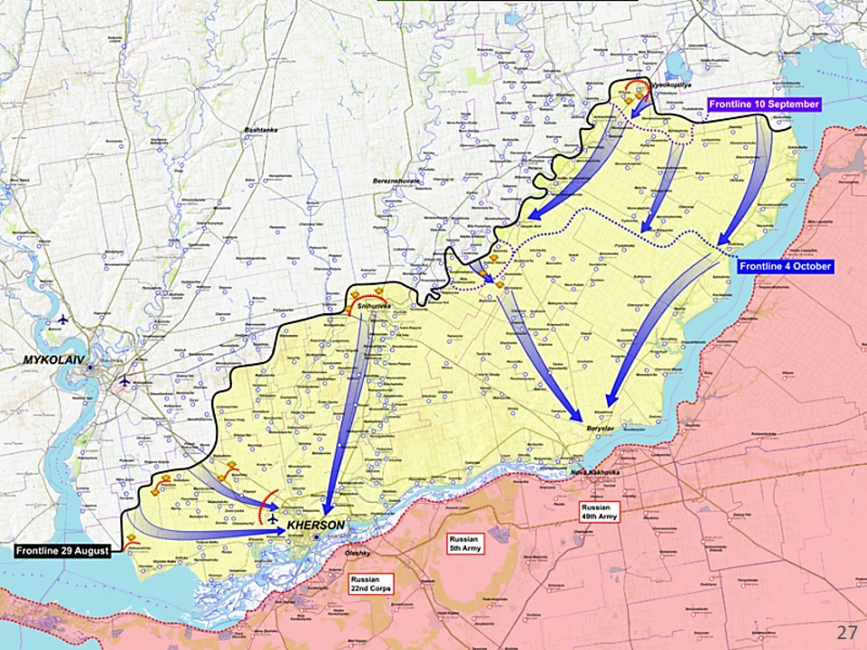
Слайд 27
– Херсонська наступальна операція.
З 29 серпня до 23 вересня українські війська вийшли на адміністративний кордон з Херсонською та Дніпропетровською областями й розпочали створювати плацдарм для просування.
В листопаді підрозділи Сил оборони України вийшли на правий берег річки Дніпро. Завдяки успішному проведенню цієї операції Україна звільнила від загарбника Херсон і ще понад 200 населених пунктів.
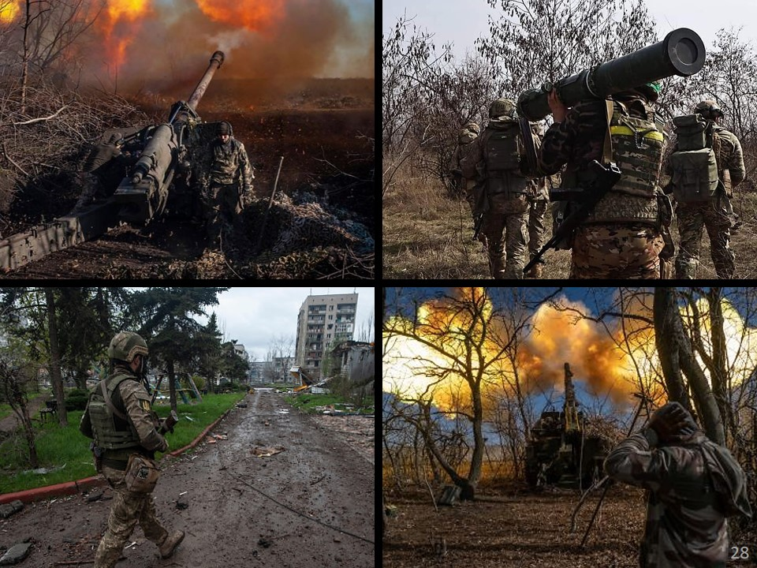
Слайд 28
Грудень 2022
Головні бої в грудні зосередилися в Бахмуті. До середини місяця ЗСУ звільнили, за різними підрахунками від 41 тис. км2 до 78 тис. км2 території України, окупованих Росією з 24 лютого.
На початку 2023 року головні бої точилися за Соледар Донецької області біля Бахмута.
Бахмут залишався найбільш гарячою точкою на всій лінії фронту. ЗСУ утримували оборонні позиції, водночас ведучи підготовку до свого контрнаступу. Також активні бої тривали на Куп'янському, Лиманському, Авдіївському та Мар'їнському напрямках. У першій половині травня ЗСУ відстоювали західний край Бахмута, водночас почавши його оточення з флангів.
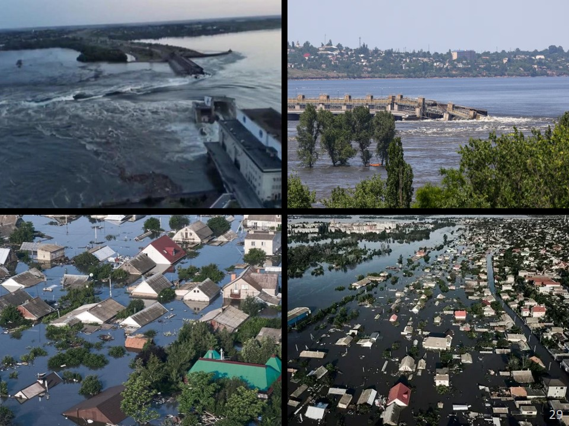
Слайд 29
Затоплення в Херсоні
6 червня зранку російська окупаційна армія підірвала Каховську гідроелектростанцію в Херсонській області, що зумовило підтоплення розташованих нижче за течією Дніпра населених пунктів.
Ракетний удар ЗСУ 22 червня по Чонгарському мосту, що з'єднує Крим із материковою Україною, позбавив російські війська змоги постачати зброю та живу силу з Криму коротким шляхом.
На початку місяця ЗСУ здобули тактичну перевагу на бахмутському напрямку та перейшли від оборони до наступу.
З 10 жовтня 2023 до 17 лютого 2024 бої за Авдіївку. Українські війська вийшли з Авдіївки та прилеглих сіл.
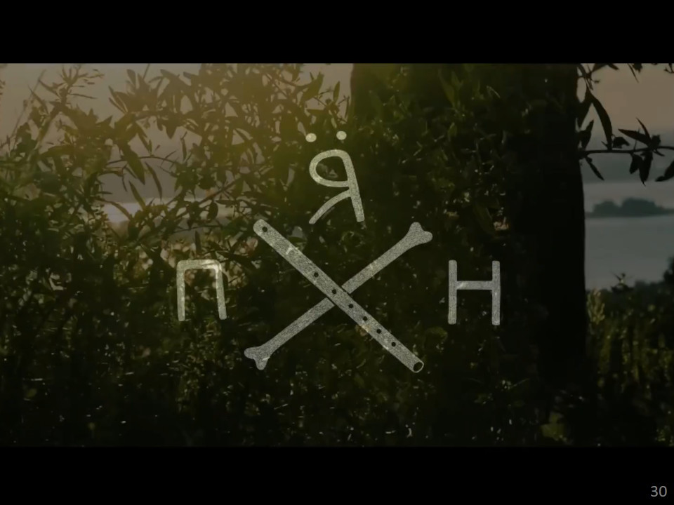
Слайд 30
Пісня «Родіна» Група «Пирятин»
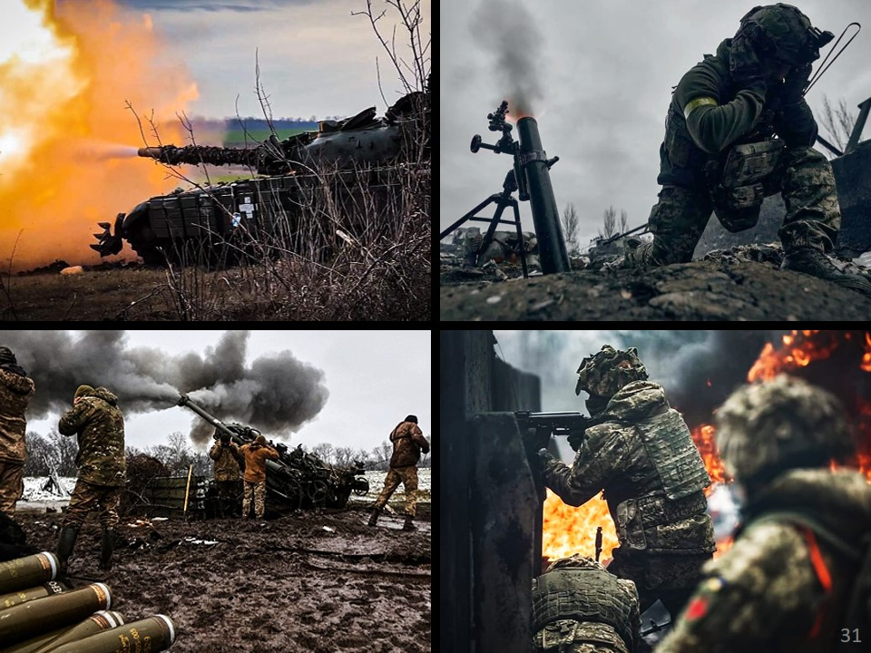
Слайд 31
Кожний сантиметр нашої української землі - це піт та кров наших Воїнів , які мужньо тримають оборону і звільняють окупаційну територію.
Кожне відвойоване село, селище , місто – це наша українська біль, сльози матерів, дружин, коханих, дітей, всієї України…
Це взірець мужності та стійкості, волі та сили, багато хто з наших Воїнів, створили історію своїми вчинками і стали Героями.
Низький Вам уклін Вам, наші Герої, наші титани….
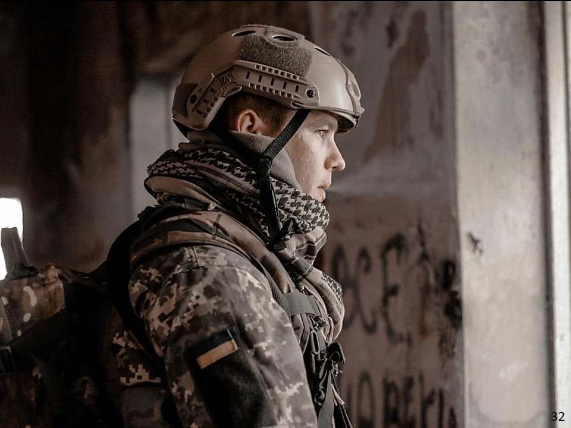
Слайд 32
І фон музичний
Мій Любий солдате, пишу я до тебе
З подякою від щирого серця,
Що маю сьогодні я мирнеє небо,
Й надію, що лихо минеться.
Ти зараз в бою — мене захищаєш,
Щоб мирним у мене був сон,
І те, що молюсь я за тебе — не знаєш,
На це не потрібно ікон.
Я просто у небо звертаюсь до Бога,
Щоб він тебе крізь боронив,
Безпечною всюди була, щоб дорога
І стало на все тобі сил.
Щоб ти повернувся вцілілим, благаю,
Молюся за тебе щодня,
І хоч особисто тебе я не знаю,
Мені відтепер ти — рідня!
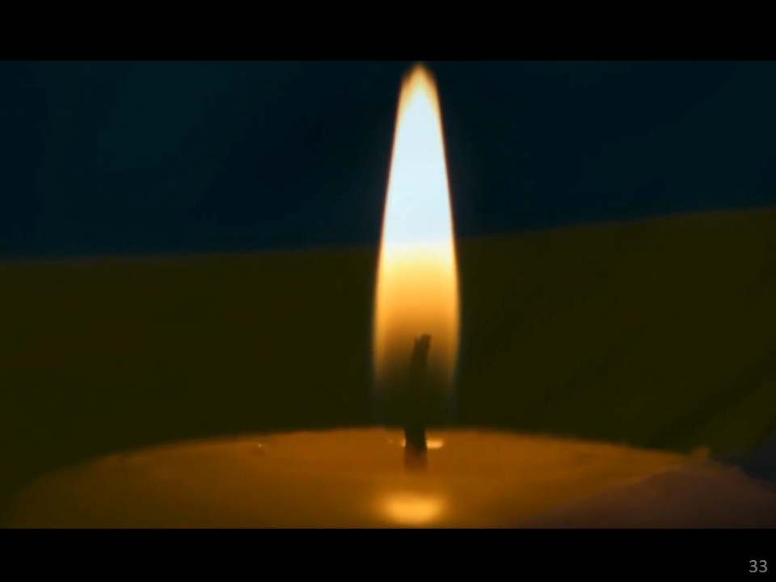
Слайд 33
Хвилина пам’яті
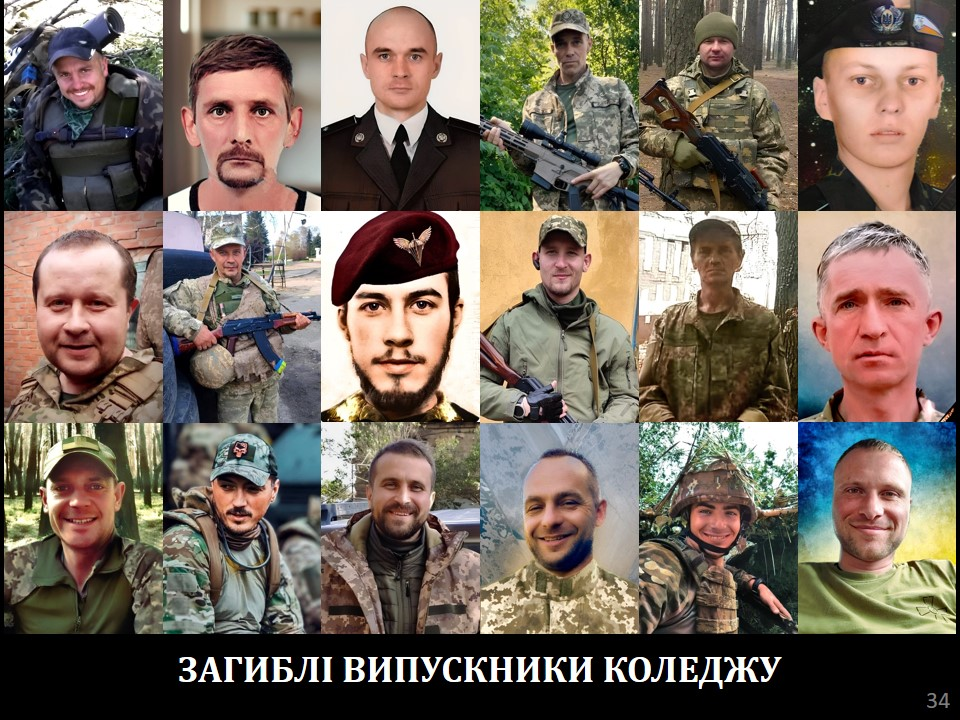
Слайд 34
ЗАГИБЛІ ВИПУСКНИКИ КОЛЕДЖУ
Ніщо так не обє’днує людей, як біда. Сьогодні у нашій країні вона одна на всіх – війна… Україна кожного дня втрачає кращих своїх синів. Болить душа за мужніх Героїв, які віддають найцінніше – своє життя для того, щоб ми змогли жити.
На жаль, серед загиблих є і випускники колледжу, їх 18.
Схиляємо голови у великій скорботі. Вічна слава Героям!
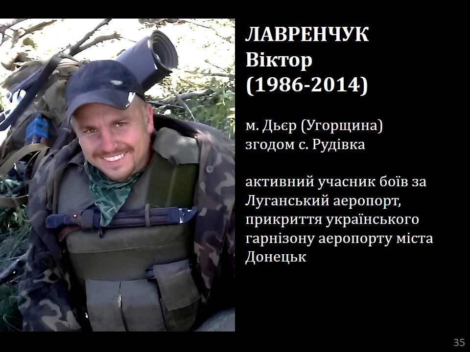
Слайд 35
1. Воїн Віктор Лавренчук народився 7 жовтня 1986 року в місті Дьєр (Угорщина) у сім'ї військовослужбовця. Згодом родина переїхала на Прилуччину, в село Рудівку. У 2003 році Віктор закінчив Рудівську середню школу. З листопада 2004 по травень 2006 року проходив службу в Збройних Силах України. Протягом 2006-2007 років працював оператором зерносушильної установки ДП “Нафком-Агро”. У 2010 році заочно закінчив Прилуцький агротехнічний коледж, здобувши вищу освіту за спеціальністю “Обслуговування устаткування і систем газопостачання” та здобув кваліфікацію техніка газового господарства. У березні 2014 року брав участь у патрулюванні українсько-російського кордону, згодом - активний учасник боїв за Луганський аеропорт, де дістав поранення. Після відновлення знову повернувся на фронт. Воював у районі с.Сабівка та м.Щастя на Луганщині, з початку грудня 2014 - у селищі Піски, де під час прикриття українського гарнізону аеропорту міста Донецьк, загинув від прямого влучання снаряду в бліндаж. 11 грудня 2014 року воїна АТО Віктора Лавренчука провели в останню путь. Похований в селі Рудівка на Прилуччині. На центральній стіні Прилуцького агротехнічного коледжу 29 квітня 2015 року було встановлено меморіальну дошку на честь Віктора Лавренчука.
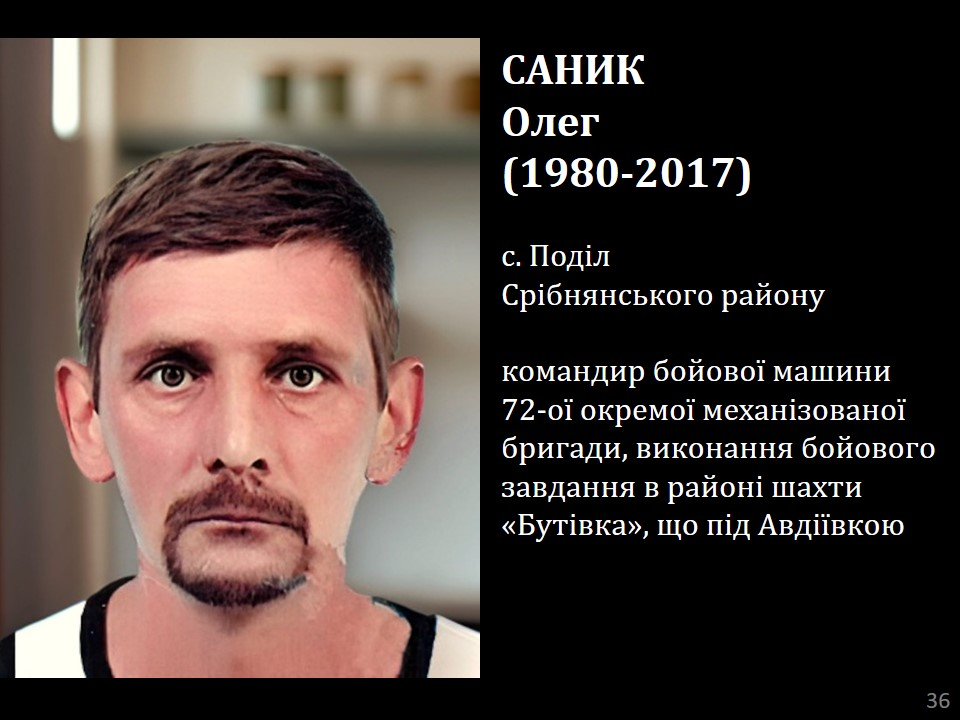
Слайд 36
2. Воїн Олег Саник народився 21 липня 1980 року в селі Поділ Срібнянського району. Згодом родина переїхала до Прилук. Із 1986 року Олег навчався в середній школі №6, яку закінчив із золотою медаллю у 1997 році. У цьому ж році вступив до Прилуцького радгосп-технікуму за спеціальністю «Обслуговування устаткування і систем газопостачання» який закінчив у 2001 році,отримавши кваліфікацію техніка газового господарства. Потім працював у «ПЗК-ПАПК», із 2002р. - АТ «Укргазбуд» БУ №1, у Прилуцькій виховній колонії, ТОВ «Агрокім». Олега Саника мобілізували в четверту хвилю 29 січня 2015 року. Відслужив, 31 березня 2016 року був демобілізований, але війна не відпускала. У січні 2017 року підписав контракт і повернувся в АТО. Був призначений командиром бойової машини 72-ої окремої механізованої бригади. Під час виконання бойового завдання в районі шахти «Бутівка», що під Авдіївкою, в результаті мінометного обстрілу героїчно загинув 12 квітня 2017 року. За особисту мужність, виявлену при захисті державного суверенітету та територіальної цілісності України, самовіддане виконання військового обов'язку, солдат Олег Саник нагороджений орденом 2За мужність» III ступеня (посмертно). Похований воїн АТО Олег Саник у рідному селі Поділ на Срібнянщині (нині Прилуцький район). 27 червня 2017 року на фасаді Прилуцького агротехнічного коледжу було відкрито меморіальну дошку загиблому воїну АТО Олегу Санику.
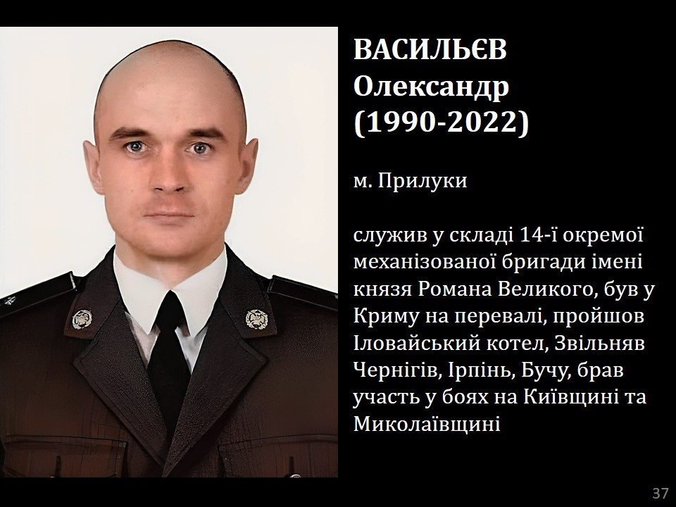
Слайд 37
3. Старший лейтенант Олександр Васильєв народився 15 березня 1990 року в місті Прилуки. Згодом родина переїхала в село Миколаївка Прилуцького району. З 1996 по 2005 рік Олександр навчався в Погребівській школі. У 2005 році продовжив навчання в Прилуцькому агротехнічному технікумі за спеціальністю “Електрифікація і автоматизація сільського господарства” та здобув кваліфікацію техніка-електрика. Після служби в армії став кадровим військовим. Згодом Олександр приїхав на Рівненщину, де створив сім’ю. У 2014 році брав активну участь у бойових діях на сході України в зоні проведення АТО/ООС. У 2020 році Олександр підписав контракт на проходження військової служби в складі 14-ї окремої механізованої бригади імені князя Романа Великого. Був у Криму на перевалі, пройшов Іловайський котел. Продовжив вдосконалювати військову справу, навчаючись у Національній академії сухопутних військ імені гетьмана Петра Сагайдачного. З перших днів повномасштабного російського вторгнення Олександр Васильєв боронив рідну країну від окупантів. Звільняв Чернігів, Ірпінь, Бучу, брав участь у боях на Київщині та Миколаївщині. Під час виконання бойового завдання, загинув 27 березня 2022 року в селі Благодатне Баштанського району, Миколаївської області. 2 квітня 2022 року бойового офіцера ЗСУ з почестями поховали у місті Рівне на кладовищі Молодіжному, на Алеї слави загиблим рівненським героям. Старший лейтинант Олександр Васильєв нагороджений орденом Богдана Хмельницького ІІІ ступеня (посмертно). На честь героїчного офіцера його іменем названо вулицю в рідному місті, а також удостоєно звання Почесний громадянин міста Рівного. У м. Володимирі встановлено меморіальну табличку на Стеллі Пам'яті воїнів 14 окремої механізованої бригади, його ім'я занесено в Книгу Пам'яті воїнів бойового з'єднання.
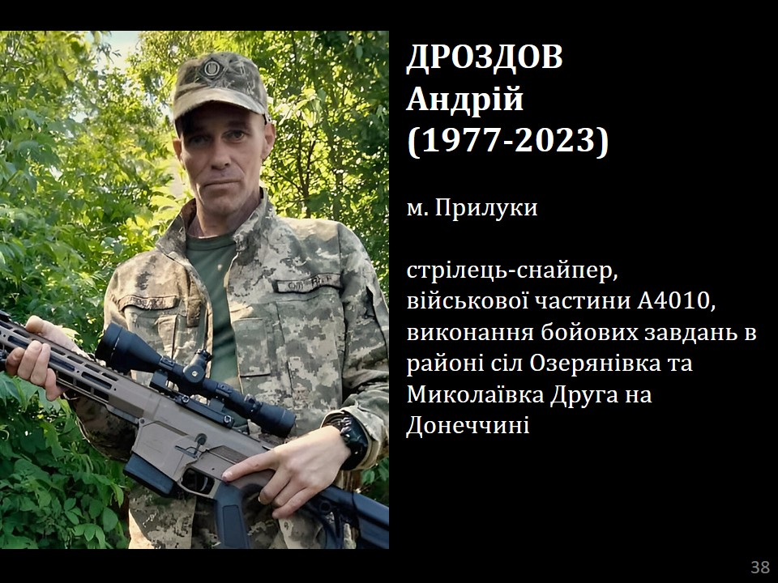
Слайд 38
4. Солдат Андрій Дроздов народився 3 жовтня 1977 року в Прилуках. Навчався в загальноосвітній місцевій школі №7. У 1999 році заочно закінчив Прилуцький агротехнічний технікум за спеціальністю «Електрифікація і автоматизація сільського господарства» та отримав кваліфікацію техніка-електрика. Після проходження строкової військової служби, працював на різних підприємствах міста. Після початку повномасштабної війни добровільно долучився до лав ЗСУ. Службу ніс на посаді стрільця-снайпера першого штурмового відділення другого штурмового зводу шостої штурмової роти другого штурмового батальйону військової частини А4010. Загинув 13 жовтня 2022 року під час виконання бойового завдання в районі сіл Озерянівка та Миколаївка Друга на Донеччині. У травні 2023 року його було поховано на цвинтарі міста Дніпра, а 10 серпня Прилуцька громада попрощалася з воїном ЗСУ, солдатом Андрієм Дроздовим та перепоховала на рідній прилуцькій землі.
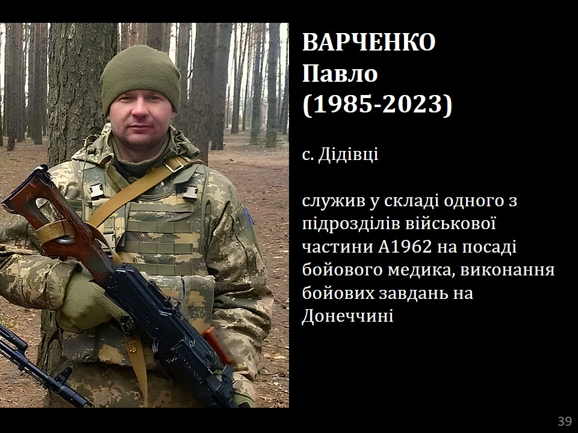
Слайд 39
5. Солдат Павло Варченко народився 6 листопада 1985 року в селі Дідівці на Прилуччині. У 2002 році закінчив місцеву школу. Після неї вступив до Прилуцького агротехнічного технікуму, де навчався за спеціальністю "Електрифікація і автоматизація сільського господарства" та здобув кваліфікацію техніка-електрика. Після першого курсу проходив строкову військову службу, потім продовжив навчання. Працював на Прилуцькому заводі "Пластмас" електриком. У січні 2023 року Павло долучився до оборонців України. Служив у складі одного з підрозділів військової частини А1962 на посаді бойового медика. 14 травня під час виконання бойового завдання на Донеччині Павло загинув. 19 травня 2023 року мешканці Прилуцької територіальної громади попрощалися з військовим ЗСУ, бойовим медиком Павлом Варченком та поховали його на місцевому цвинтарі малої батьківщини.
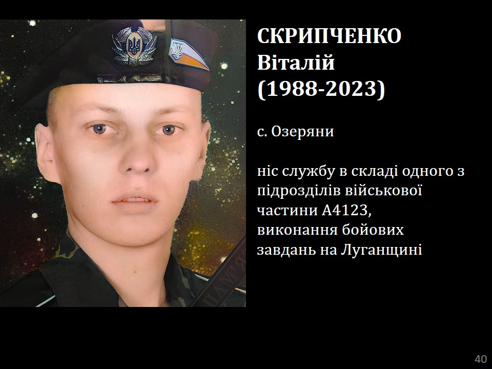
Слайд 40
6. Солдат Віталій Скрипченко народився 4 червня 1988 року в селі Озеряни на Чернігівщині. У 2008 році закінчив Прилуцький агротехнічний технікум за спеціальністю “Будівництво, обслуговування і ремонт гідромеліоративних споруд” і здобув кваліфікацію техніка-гідротехніка. Протягом 2008-2009 років проходив строкову військову службу. Останнім часом працював охоронцем в маркеті АТБ. У грудні 2022 року Віталій долучився до лав оборонців України. Службу ніс у складі одного з підрозділів військової частини А4123. 28 травня 2023 року під час виконання бойового завдання на Луганщині Віталій загинув. 8 червня 2023 року, Варвинська громада попрощалася із загиблим військовим ЗСУ, солдатом Віталієм Скрипченком. Похований на місцевому цвинтарі малої батьківщини.
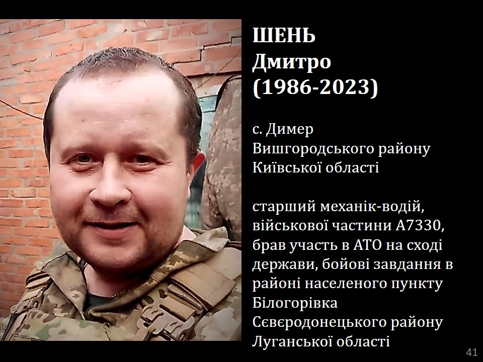
Слайд 41
7. Молодший сержант Дмитро Шень народився 16 березня 1986 року в селищі Димер Вишгородського району Київської області. Згодом родина переїхала у село Смош Прилуцького району, де Дмитро закінчив навчання в середній школі. З 2001 року по 2005 рік навчався у Прилуцькому агротехнічному технікумі за спеціальністю "Електрифікація і автоматизація сільського господарства" та здобув кваліфікацію техніка-електрика. Дмитро був працівником комунального підприємства “Прилукитепловодопостачання”. Ще до початку повномасштабного вторгнення брав безпосередню участь в антитерористичній операції на сході держави. Після 24-го лютого 2022 року перебував на посаді старшого механіка-водія 1 механізованого відділення 1 механізованого взводу механізованої роти військової частини А7330. 5 липня 2023 року Дмитро загинув у районі населеного пункту Білогорівка Сєвєродонецького району Луганської області. Дванадцятого липня 2023 року Прилуки провели в останню путь військового ЗСУ, молодшого сержанта Дмитра Шеня, поховавши його на міському цвинтарі.
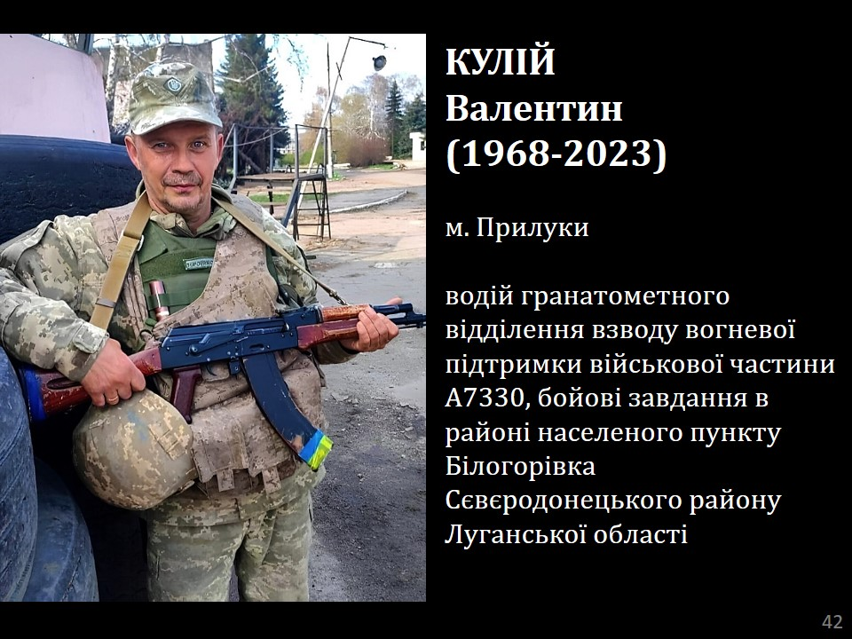
Слайд 42
8. Солдат Валентин Кулій народився 15 червня 1968 року в місті Прилуки. Навчався в середній школі №1. Закінчивши вісім класів, у 1983 році Валентин пішов навчатися в Прилуцьке професійно-технічне училище. Проходив строкову службу в десантних військах. Трудову діяльність розпочав у комунальному підприємстві "Прилукитепловодопостачання" на посаді водія. З 1990 року по1992 рік Валентин заочно навчався в Прилуцькому радгосп-технікумі, за спеціальністю «Електрифікація сільського господарства», де здобув кваліфікацію техніка-електрика. Працював за фахом у приватному підприємстві "Таланпром". Солдат Валентин Кулій ніс службу на посаді водія гранатометного відділення взводу вогневої підтримки роти вогневої підтримки військової частини А7330. 5 липня 2023 року Валентин отримав смертельні поранення під час стрілецького бою з ворожою ДРГ в районі населеного пункту Білогорівка Сєвєродонецького району Луганської області. 12 липня 2023 року мешканці Прилук попрощалися з військовим ЗСУ, солдатом Валентином Кулієм. Похований на одному з міських цвинтарів.

Слайд 43
9. Солдат Владислав Єфременко народився 25 жовтня 1997 року в місті Первомайськ Миколаївської області. Згодом родина переїхала в смт.Варву на Чернігівщині. У 2015 році закінчив Варвинську ЗОШ I-III ступенів, а потім Прилуцький агротехнічний коледж за спеціальністю "Монтаж, обслуговування та ремонт електротехнічних установок в АПК" і здобув кваліфікацію техніка-електрика. У жовтні 2020 року вирішив долучитися до лав оборонців України та підписав контракт з військовою частиною А0281. Після початку повномасштабної війни перебував на посаді командира відділення. Останнє бойове завдання виконував поблизу одного з населених пунктів Харківщини, а від 9 квітня 2022 року вважався зниклим безвісти. Загинув в с.Сулигівка Ізюмського району Харківської області. Лише 7 липня 2023 року вдалося ідентифікувати тіло полеглого воїна. 13 липня 2023 року мешканці Варви попрощалися з військовим ЗСУ, солдатом Владиславом Єфременком та поховали на цвинтарі смт.Варви.
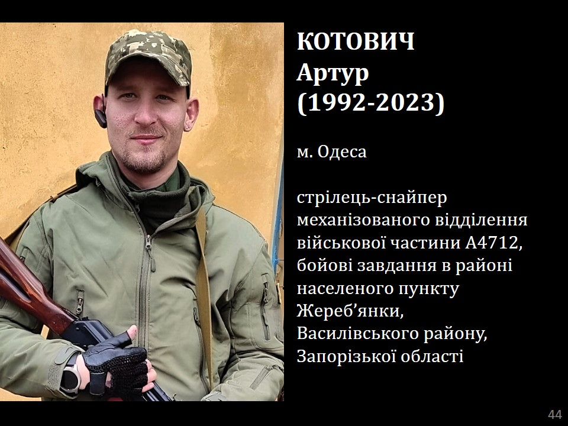
Слайд 44
10. Солдат Артур Котович 31.10.1995 – 06.07.2023 Народився 31 жовтня 1992 року в м. Одесі. В дитинстві з родиною переїхав до м.Прилуки. У 2007 році Артур закінчив Прилуцьку загальноосвітню школу №13 та вступив до Прилуцького агротехнічного коледжу за спеціальністю “Електрифікація і автоматизація сільського господарства”, який закінчив у 2011 році та здобув кваліфікацію техніка-електрика. Подальше навчання продовжив на заочному відділенні Національного університету водного господарства та природокористування, м.Рівне. Працював у Прилуцькому РЕМі, тютюновій компанії та ТОВ «Алітоні». На початку повномасштабного вторгнення пішов до Прилуцького центру комплектування та соціальної підтримки і записався добровольцем до лав Збройних Сил України. Проходив військову підготовку в Словенії та одній з країн Балтії. Служив стрільцем-снайпером механізованого відділення, механізованого взводу, механізованої роти, механізованого батальйону військової частини А4712. 06 липня 2023 року в результаті ворожого артилерійського обстрілу в районі населеного пункту Жереб’янки Василівського району Запорізької області Артур Котович загинув. 28 вересня у Прилуках відбулася церемонія прощання із загиблим воїном, солдатом, стрільцем-снайпером одного із віддділень військової частини А4712, мешканцем села Пирогівці Артуром Котовичем та поховання його на місцевому цвинтарі.
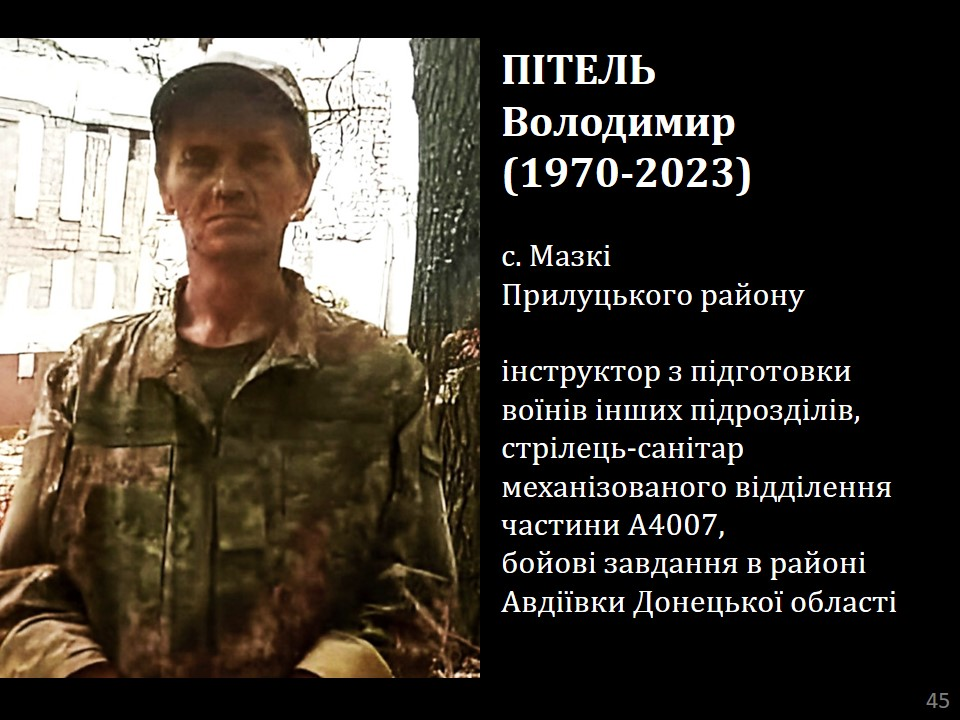
Слайд 45
11. Воїн ЗСУ Володимир Пітель народився 15 вересня 1970 року в селі Мазках Прилуцького району. Навчався в Мазківській восьмирічній школі. Дев’ятий клас закінчував у Дідівській середній школі. У 1985 році вступив до Прилуцького радгосп-технікуму гідромеліорації та електрифікації сільського господарства за спеціальністю «Електрифікація сільського господарства». У 1987 році перевівся до Прилуцького СПТУ-34, яке закінчив 1988 року та здобув робітничу спеціальність «Електромонтажник по освітленню та освітлювальних мережах». Потім була строкова служба в армії. Два роки Володимир служив на аеродромі “Байконур”. Повернувся в село Манжосівка, де працював оператором у шкільній котельні. Проте більшу частину життя і трудової діяльності провів у селі Мазках у товаристві “Крок УкрЗалізБуд”. 16 червня 2023 року був призваний до лав Збройних Сил України по мобілізації. Спочатку пройшов навчання у селищі Гончарівському, потім у навчальному центрі був інструктором з підготовки воїнів інших підрозділів. Далі служив стрільцем-санітаром механізованого відділення механізованого взводу механізованої роти механізованого батальйону в складі військової частини А4007. 6 вересня 2023 року під час виконання бойового завдання, внаслідок мінометного обстрілу противника в районі Авдіївки Донецької області, Володимир Пітель загинув. 12 вересня мешканці Сухополов’янської громади попрощалися із загиблим воїном ЗСУ, рядовим, стрільцем-санітаром військової частини А4007 Володимиром Пітелем та поховали його на місцевому цвинтарі села Манжосівки.
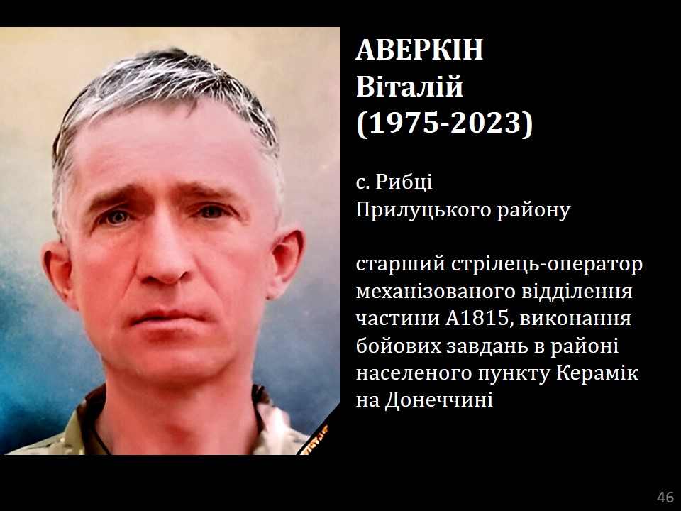
Слайд 46
12. Воїн Віталій Олександрович Аверкін Народився 7 липня 1975 року в селі Рибці Прилуцького району Чернігівської області. Навчався у Краслянській школі. У 1990 році вступив до Прилуцького гідромеліоративного технікуму на відділення «Землевпорядкування». Восени 1993 року був призваний на дійсну строкову службу. Після проходження - працював у Державній охоронній службі. З 12 січня 2021 року знову став до лав ЗСУ у складі одного з підрозділів військової частини А1815 на посаді старшого стрільця-оператора механізованого відділення 1 окремої танкової Сіверської бригади. Влітку 2023 року отримав поранення. Загинув 30 вересня 2023 року під час виконання бойового завдання в районі населеного пункту Керамік на Донеччині.
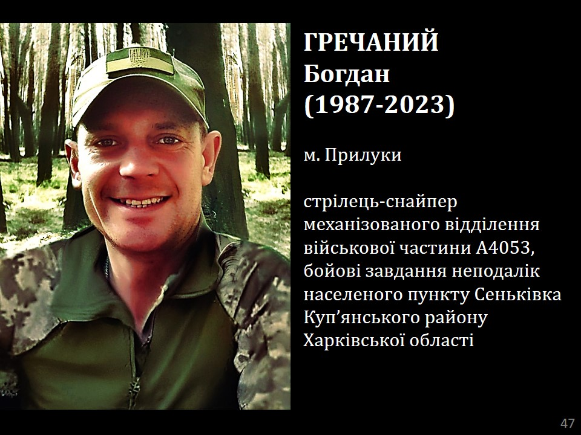
Слайд 47
13. Солдат Богдан Гречаний 15.01.1987 – 09.10.2023 Народився в місті Прилуках. Навчався в загальноосвітній школі №2 яку закінчив у 2004 році та вступив на заочне відділення Чернігівського державного педагогічного університету ім. Т.Г.Шевченка за спеціальністю "Фізичне виховання", який закінчив у 2009 році та одержав кваліфікацію вчителя фізичного виховання та валеології. У 14 років Богдан втратив маму, виховувала його бабуся. Працював на різних підприємствах міста Прилук. З 2012 по 2015 рік навчався на заочному відділенні Прилуцького агротехнічного коледжу за спеціальністю «Землевпорядкування» та отримав кваліфікацію техніка-землевпорядника. Після одруження мешкав у Києві, разом з дружиною виховували сина Дениса. На початку повномасштабного вторгнення став на захист Батьківщини. Проходив службу на посаді стрільця-снайпера 1-го механізованого відділення 3-го механізованого взводу 2-ї механізованої роти 1-го механізованого батальйону військової частини А4053. 9 жовтня 2023 року під час виконання бойового завдання з виявлення та знищення сил противника, отримавши поранення несумісні з життям, неподалік населеного пункту Сеньківка Куп’янського району Харківської області Богдан Гречаний загинув. 15 жовтня мешканці Прилуцької громади попрощалися з воїном, солдатом ЗСУ, стрільцем-снайпером одного із відділень військової частини А4053 Богданом Гречаним та поховали його на Алеї Героїв (цвинтар Горова Білещина) у Прилуках.
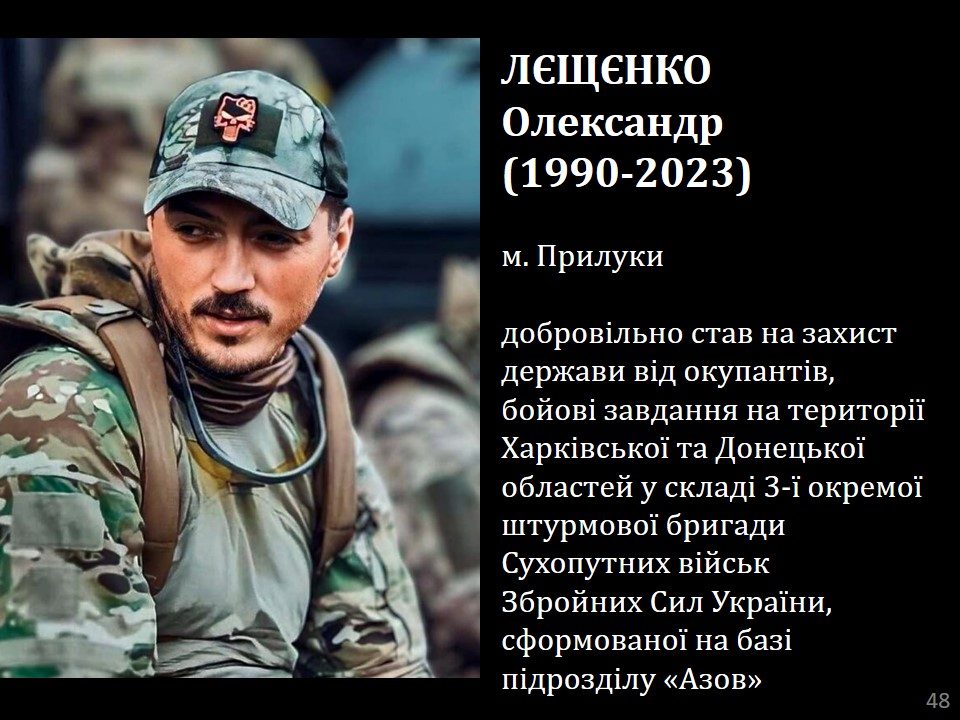
Слайд 48
14. Воїн Олександр Лєщєнко 11.11.1990-18.10.2023 уродженець міста Прилук Чернігівської області. У 2005 році після закінчення 9 класу Прилуцької гімназії №1 вступив до Прилуцького агротехнічного технікуму (сьогодні – Прилуцький технічний фаховий коледж) за спеціальністю “Електрифікація і автоматизація сільського господарства” та здобув кваліфікацію техніка-електрика, згодом продовжив навчання на заочному відділенні Національного університету водного господарства та природокористування, м.Рівне. Після завершення навчання мешкав у різних містах України, а з 2018 року – у м.Львові, де зустрів майбутню дружину. Саме Львів став для Олександра Лєщєнка домівкою, де він хотів жити, і в якому залишився назавжди. У мирний час працював спершу керівником магазинів «ROZETKA», потім створював україномовний контент на платформах «Twitch» і «YouTube». Робота стала найбільшим захопленням його життя. Спершу канал був винятково розважальним, а з початком війни Олександр перетворив його на платформу для великих зборів на підтримку ЗСУ та постраждалих громадян. Олександр Лєщєнко завжди вважав, що робить недостатньо, та прийняв рішення добровільно стати на захист держави від окупантів. Виконував бойові завдання на території Харківської та Донецької областей у складі 3-ї окремої штурмової бригади Сухопутних військ Збройних Сил України, сформованої на базі підрозділу «Азов». Під час виконання бойового завдання 18.10.2023 року воїн загинув. 23 жовтня 2023 року у Львові відбулася міська церемонія прощання з військовим ЗСУ, уродженцем Прилук Олександром Лєщєнком та поховання його на Личаківському цвинтарі.
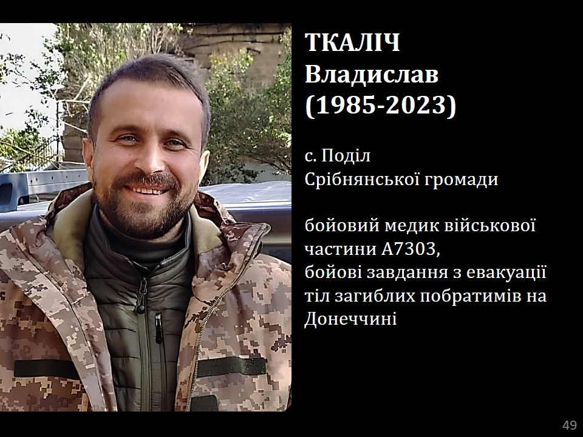
Слайд 49
15. Молодший сержант Владислав Ткаліч 07.01.1985 – 01.11.2023 Народився 7 січня 1985 року в селі Поділ Срібнянської громади на Чернігівщині. З 1991 по 2000 роки навчався в Подільській середній школі. З 2000 по 2002 роки продовжив навчання в Срібнянській середній школі. У 2002 році вступив до Прилуцького агротехнічного технікуму за спеціальністю "Землевпорядкування" та одержав кваліфікацію техніка-землевппорядника. У 2005 році розпочав проходження строкової військової служби на посаді старшого пожежника. Під час служби вступив на заочне відділення Національного університету водного господарства та природокористування, м.Рівне за спеціальністю "Землевпорядкування та кадастр", який закінчив у 2011 році. Далі працював у місті Києві у ТОВ "Аква Віта", в лютому 2011 року одружився. Мешкав з сім'єю в м.Борисполі, працював у аеропорту "Бориспіль" картографом. У перший день повномасштабної війни вступив до лав тероборони, з часом долучився до одного з підрозділів військової частини А7303. Пройшов медичні курси та служив на посаді бойового медика. 24 жовтня 2023 року під час виконання бойового завдання з евакуації тіл загиблих побратимів на Донеччині отримав важкі поранення, після чого його направили в лікарню міста Дніпра. Протягом тижня медики боролися за його життя, але 1 листопада серце воїна зупинилося. 04 листопада мешканці Срібнянської громади попрощалися з молодшим сержантом ЗСУ Владиславом Ткалічем та поховали його на місцевому цвинтарі села Поділ.
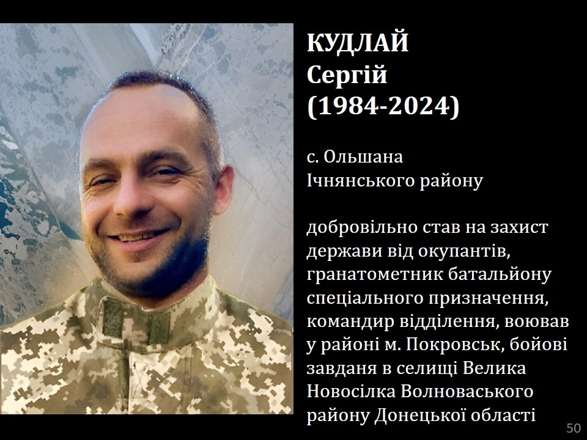
Слайд 50
16. Кудлай Сергій Миколайович Народився 02 вересня 1984 року в с. Ольшана Ічнянського району Чернігівської області. Закінчив 9 класів Ольшанської середньої школи, а потім продовжив навчання в Прилуцькому гідромеліоративному технікумі, після закінчення якого отримав спеціальність електромонтер. Коли досяг призовного віку, то поповнив ряди строковиків військової служби. Після завершення служби повернувся в рідне село та працевлаштувався в м. Прилуки на пожежну частину . У 2007 році одружився, а в 2013 році разом із дружиною та сином переїхали до села Іваниця. З початком повномасштабного вторгнення російської федерації в Україну пішов добровольцем та був зарахований до лав ЗСУ 15 квітня 2022 року. Воював у районі м. Покровськ Донецької області на посаді гранатометника 1 відділення спеціального призначення 3 взводу спеціального призначення 1 роти спеціального призначення 20 окремого батальйону спеціального призначення. 28 вересня 2022 року отримав поранення, проте після завершення лікування знову повернувся на першу лінію оборони, отримав звання молодшого сержанта та продовжив захищати кордони України від країни – агресора на посаді командира відділення. Був спокійним, урівноваженим та відповідальним, допомагав тим, хто цього потребував, не вагаючись виконував будь – які прохання й доручення, на позиціях був відважним і хоробрим, не боявся загинути за свої погляди та переконання. Загинув 12 січня 2024 року під час виконання бойового завданя в селищі Велика Новосілка Волноваського району Донецької області. Похований 19 січня 2024 року в с. Іваниця Прилуцького району Чернігівської області, де проживає його родина. Без батька залишилися два сини.
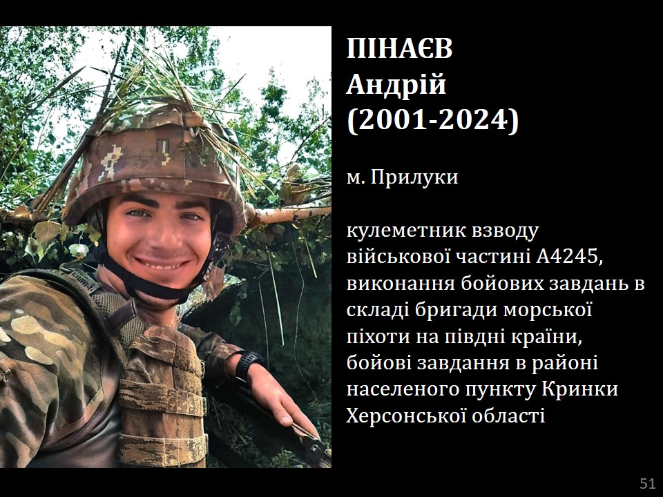
Слайд 51
17. Воїн Андрій Володимирович Пінаєв (28.09.2001-31.01.2024) Народився Андрій Володимирович 28 вересня 2001 року в місті Прилуки. Навчався в загальноосвітній школі № 3, яку закінчив у 2017 році. У 2017 році вступив до Прилуцького технічного фахового коледжу та здобув спеціальність електромеханіка. З 2021 року здобував освіту у Національному університеті біоресурсів і природокористування України. У березні 2022 року добровольцем вступив до лав Повітряних Сил Збройних Сил України. Проходив службу у військовій частині А4245 на посаді кулеметника взводу охорони роти охорони батальйону охорони. Виконував завдання щодо прикриття повітряного простору Прилуччини. Улітку 2023 року Андрій Пінаєв був одним з добровольців, які вирушили до зведеної стрілецької бригади Повітряних Сил Збройних Сил України. Пізніше був відряджений на південь країни для виконання бойових завдань в складі бригади морської піхоти. Андрій Пінаєв з позивним «Барс» завжди був взірцем виконання завдань за призначенням.Нагороджений відзнакою «ЗА ШТУРМ» командиром 35-ї окремої бригади морської піхоти. 16 жовтня 2023 року в районі населеного пункту Кринки Херсонської області, під час виконання бойових завдань із захисту Батьківщини, внаслідок артилерійського обстрілу противника, солдат Андрій Пінаєв отримав важке поранення. Тривалий час лікувався у військово-медичному центрі м.Одеси, але мужнє серце захисника України 31 січня 2024 року зупинилось назавжди. Похований 3 лютого 2024 року на «Алеї Героїв» (цвинтар Горова Білещина) у Прилуках.
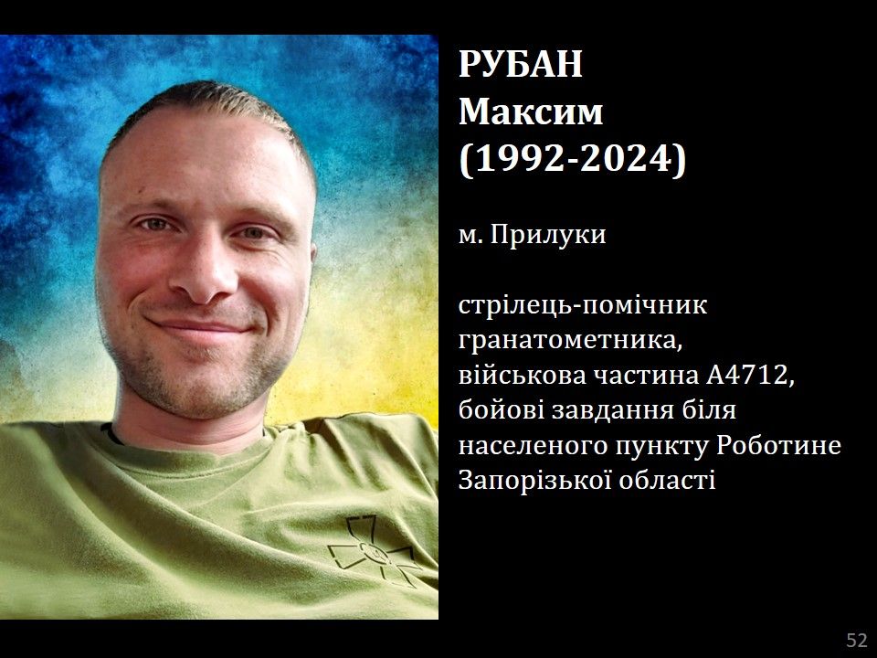
Слайд 52
18. Воїн Максим Валентинович Рубан (07.10.1992 — 07.02.2024) Народився Максим Валентинович 7 жовтня 1992 року в місті Прилуки. Закінчив середню школу №9. Навчався в Прилуцькому технічному фаховому коледжі. Пізніше продовжив навчання у Сумському університеті. Максим був щирою, доброю людиною, завжди усміхнений та життєрадісний. У місті всі знали його і пам’ятають як Романа Петрика. Та все ж чоловік прийняв для себе непросте рішення і змінив своє ім’я та прізвище, чому був дуже радий. Працював Максим Валентинович у супермаркетах електроніки та побутової техніки Фокстрот та Ельдорадо. Призваний на військову службу по мобілізації 6 квітня 2022 року Прилуцьким районним територіальним центром комплектування та соціальної підтримки. Проходив службу у військовій частині А4712 на посаді стрільця — помічника гранатометника 2 механізованого відділення 1 механізованого взводу 1 механізованої роти 2 механізованого батальйону. 7 лютого 2024 року біля населеного пункту Роботине Запорізької області під час виконання бойового завдання, мужньо виконавши військовий обов’язок, в бою за Україну, її свободу і незалежність, Максим Рубан — загинув. Похований 14 лютого 2024 року на кладовищі «Новий побут» у Прилуках.
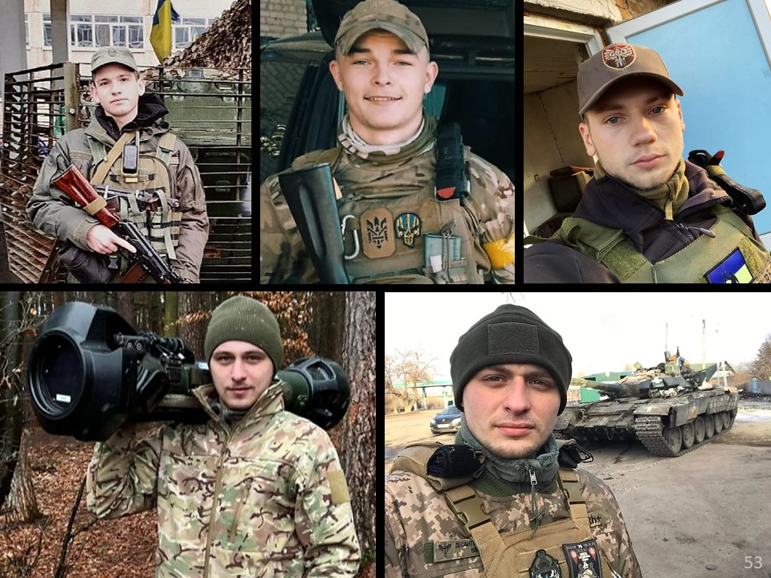
Слайд 53
Наша молодь рано подорослішала, війна у кожному серці відгукується болем.
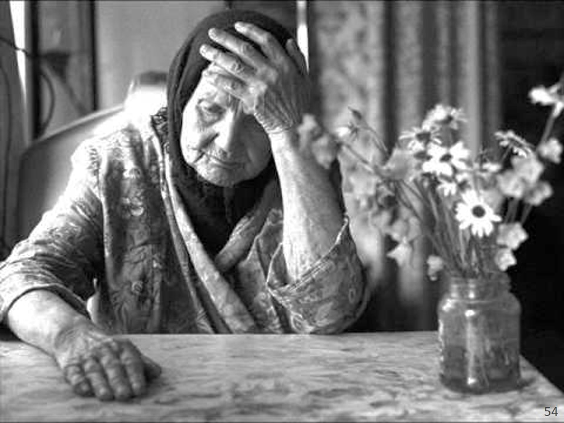
Слайд 54
Вірш Бартош Ангеліни , студентки 2 курсу «Облік та аудит».
І сніг давно уже розтанув, і проліски давно вже відцвіли.
А мати все чекає сина з фронту.
Вістей від нього нуль.
Та серцю материнському на це начхати.
Вона живе і вірить в те що він живий, він просто зайнятий, або не має змоги щоб зв'язатись.
І ось уже в усіх лісах пташки щебечуть, і хризантеми вже свою красу всім показали.
А вісті все ще немає...
А мати все чекає, надія душу так просто не покине.
І кожну ніч їй син рідненький сниться.
На ганку мати кожен день сидить з надією, що син прийде, сидить сама
Поруч нема нікого із людей, на гілці лиш сидить зозуля кожен день і з сумом поглядає на стару
І листя вже жовтіють потихеньку, пташки в теплі краї вже відлетіли.
А вістей як не було так і нема.
І мати плаче кожен день, але все ж вірить, що він повернеться додому, живий, здоровий і все буде як раніше.
Чекати вона буде до кінця життя.
Та дочекатися вона навряд чи зможе
А в лісі недалечко стоїть один єдиний хрест.
На ньому тільки дата смерті, і ні ім'я, ні фото, нема нічого.
Цей хрест ліс оберігає як своє дитя
Ніколи ліс не міг подумать, що доведеться чиєїсь мертвої дитини оберігати спокій.
Та що ж поробиш така вже суть війни нести всім смерть і горе.
Слово надається бувшому студенту, Воїну , Котеленцю Олександру, який за підтримки своїх побратимів зробили алею пам’яті загиблих воїнів, які навчалися у Прилуцькому технічному фаховому коледжі
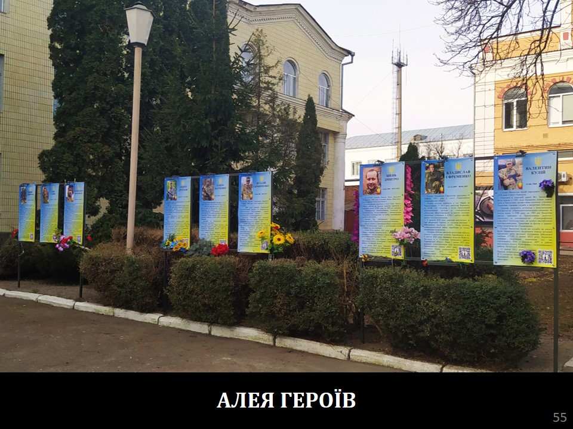
Слайд 55 ( виступає Котеленець Олександр)
Алея героїв

Слайд 56
Наша молодь подорослішала не по рокам….Вона талановита, чуттєва і дуже творча. В команді із здобувачами освіти педколеджу зроблена гарна робота…
Колівушко Діана, Гапанович Аліна , Березенко Каріна, Цибенко Данило,Дем’яненко Єлизаветта, Лобович Ярослав.
Всі герої вимишлені, але це історія сьогодення… хтось відшукає себе у цих кадрах…
Слайд 57
Відео наших здобувачів освіти ….
Слайд 58
Війна і Прилуччина - це наша біль, те, що завжди буде в пам'яті кожного прилуччанина.
Лютий –березень 2022 року…
4 березня у місті Прилуки на Чернігівщині, команда Суспільне Чернігів провела допрем’єрний показ документального проєкту #Лютий #Опір #Прилуки, в якому показується як українські бійці тримали оборону Прилуцького району від російських окупантів у лютому та березні 2022 року.
Фільм побудований на спогадах учасників бойових дій, які обороняли Прилуцький район на Чернігівщині у лютому та березні 2022 року.
Команда проєкту зібрала свідчення, як українські воїни нищили еліту російських військ — гранатометами із засідок, мінометами, байрактарами, авіацією і навіть трофейними російськими танками.
Авторка проєкту — журналістка Суспільне Чернігів у Прилуках Надія Мартишко..
У фільмі багато знайомих людей, наших земляків, які служать у ЗСУ, ТРО, розповідь комбата 54-го окремого розвідувального батальйону Михайла Тиша, інтерв’ю Романа Зінченка, який довгий час виховував прилуцьку молодь у дусі козацтва та інші…
Саме ці люди не пустили ворога у місто, наші Герої, які врятували нас від страшної трагедії – окупації.
Наше козацьке місто могло стати Бучею. Низький Вам уклін і повага багатьох поколінь на віки.
Слайд 59
Фільм був відзнятий на місцях, де проходили бої: під Ольшаною, Срібним, Переволочною, на Мільковсій горі, під Крупичполем, Припутнями, Великій дорозі…
Відео та фото матеріалу зібраний очевидцями…Велика подяка Вам за цю роботу!
Творча команда:
* авторка фільму: Надія Мартишко
* відеографи: Дмитро Патипака, Олексій Підгайний та Влад Колісник.
Слайд 60
Фільм
Слайд 61
Наші здобувачі освіти багасторонні і талановиті.
Олексій Булавка, здобувач освіти спеціальності «Електроенергетика, електротехніка та електромеханіка».
Пісня під гітару «Воїни світла».
Слайд 62
750 днів незламності, стійкості, болю, сліз, втрат і молитв…
Війна – це найгірше,що може бути в житті , вона випала на нашу долю…
У наших руках майбутнє України, ми створюємо історію!
Україна поділилася на дві частини : хто воює і хто допомагає воювати !
Слайд 63
Велика подяка всім: ЗСУ , ППО, Національній гвардії, поліції, викладачам, вчителям, медпрацівникам, ДСНСУ, енергетикам, нафтовикам, агрономам, трактористам, комбайнерам, волонтерам, всім підприємцям , кожному українцю, хто донатить, слухає українські пісні, підтримує українську церкву, дбає про культурну спадщину, говорить українською, вірить у нашу ПЕРЕМОГУ!
Слайд 64
Слово директору Чернікову Павлу Івановичу.
Хто сильним духом, і знає, що найголовніше – це мирне небо і своя земля під ногами!
Слава Україні !
Слайд 65
Пісня «Вільні люди» Група «Без обмежень»